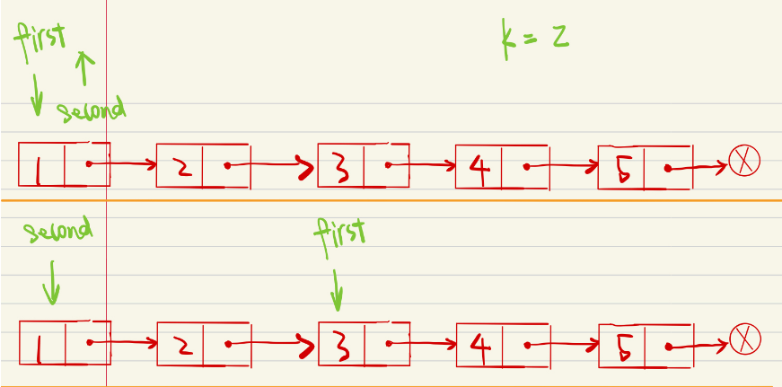

1. 给定一个排序链表，删除所有含有重复数字的节点，只保留原始链表中 没有重复出现 的数字。
输入: 1->2->3->3->4->4->5
输出: 1->2->5
递归
class Solution {
public:
ListNode* deleteDuplicates(ListNode* head) {
if (head == NULL) return head;
if (head->next != NULL && head->val == head->next->val) { //找相同数
while (head->next != NULL && head->val == head->next->val) head = head->next; //忽略所有相同数
return deleteDuplicates(head->next); //从下一个不同数再开始递归
}
else head->next = deleteDuplicates(head->next);
return head;
}
};
一般删除重复节点
1.头节点head不能移动，他是寻找到链表的关键。因此我们需要一个辅助变量listNode。
2.考虑到头节点有可能同样是重复节点。所以需要创建一个空节点作为链表的真正头节点。
3.当定义了辅助空节点listNode，那么listNode也不能移动。这是因为一旦listNode随着第2点中所述的重复的头节点被删除而移动的话，那么 就找不到这个链表了。
4.需要考虑如何将重复元素全部删除。（重点）
// 循环条件为cur.next和cur.next.next节点存在
while(cur.next != null && cur.next.next != null) {
// cur.next和cur.next.next中data域数值相等进行删除操作
if(cur.next.val == cur.next.next.val)
{
// 这里构建新的temp节点，实际上就是将重复节点视为单独的链表
ListNode temp = cur.next;
// 循环判断，temp移动至最后一个节点
while(temp !=null && temp.next != null && temp.val == temp.next.val)
{
temp = temp.next;
}
// 将cur指向temp后一个节点，即可实现删除所有重复节点的操作
cur.next = temp.next;
}
else {
cur = cur.next;
}
}
2.旋转链表
给定一个链表，旋转链表，将链表每个节点向右移动 k 个位置，其中 k 是非负数。
输入: 1->2->3->4->5->NULL, k = 2
输出: 4->5->1->2->3->NULL
解：使用双指针
先让快针走k步，这时两个指针相差k，然后两个指针一起走完整个链表
这时，两个指针之间的区域就是我们要移动的区域，只要更改指针指向，就完事了。
即，first->next 指向 head，完成旋转（当然还没完事）；
head 指向 second->next，头结点指向确认；
second->next 指向空节点，尾结点指向确认；


class Solution {
public:
ListNode* rotateRight(ListNode* head, int k) {
if(!head) return NULL;
int n=0;
for(auto p=head;p;p=p->next) n++;
k%=n;
auto first=head,second=head;
while(k--){
first=first->next;
}
while(first->next){
first=first->next;
second=second->next;
}
first->next=head;
head=second->next;
second->next=NULL;
return head;
}
};
3.K个一组翻转
class Solution {
public:
ListNode* reverseKGroup(ListNode* head, int k) {
if (head == NULL) return NULL;
ListNode *a = head;
ListNode *b = head;
for (int i = 0; i < k; i++) {
if (b == NULL) return head;
b = b->next;
}
ListNode *newNode = reverseOperator(a,b); //翻转
a->next = reverseKGroup(b,k); //翻转后a是这组最后一个元素
return newNode;
}
ListNode* reverseOperator(ListNode* n,ListNode *b) {
ListNode *pre, *cur, *nxt;
pre = NULL; cur = n; nxt = n;
while (cur != b) { //用头插法把b之前的翻转
nxt = cur->next;
cur->next = pre;
pre = cur;
cur = nxt;
}
return pre;
}
};
4.合并有序链表
ListNode head;
ListNode *cur = &head;
head.next是一个指针，cur->next也是一样的
ListNode *mergelist(ListNide* l1, ListNode* l2)
{
ListNode head, *cur = &head, *p = l1, *q = l2 ;
if( (!l1) && (!l2) )
{
return l1 ? l1 : l2 ;
}
while()
{
if()
else()
cur = cur->next;
}
cur->next = l1 ? l1 : l2 ;
return head.next ;
}
ListNode* mergeKlist(vector<ListNode*>lists)
{
ListNode* num = nullptr ;
for( size_t i=0; i<lists.size() ; i++ )
{
num = mergelist(num, lists[i])
}
return num;
}
5.环
如果有环，则快慢指针相遇点，到环入点的距离等于链表起点到环入点的距离
ListNode *detectCycle(ListNode *head) {
if(head == NULL) return NULL;
ListNode *slow = head;
ListNode *fast = head;
while(fast && fast->next) //寻找快慢指针相遇点，即表示有环
{
slow = slow->next;
fast = fast->next->next;
if(slow == fast)
{
break;
}
}
if(!fast || !(fast->next)) //判断上个循环是否是因为无环而退出
{
return NULL;
}
while(slow != head) //从链表起点和相遇点开始前进，在环入点相遇
{
slow = slow->next;
head = head->next;
}
return head;
}
bool hasCycle(ListNode *head) {
//哈希表
// unordered_set<ListNode*> nodes;
// while(head){
// if(nodes.count(head))return true;
// nodes.insert(head);
// head=head->next;
// }
// return false;
//快慢指针
if(head==NULL) return false;
ListNode* tmp=head->next;
while(tmp){
if(head==tmp) return true;
head=head->next;
tmp=tmp->next;
if(tmp==NULL) return false;
tmp=tmp->next;
}
return false;
}